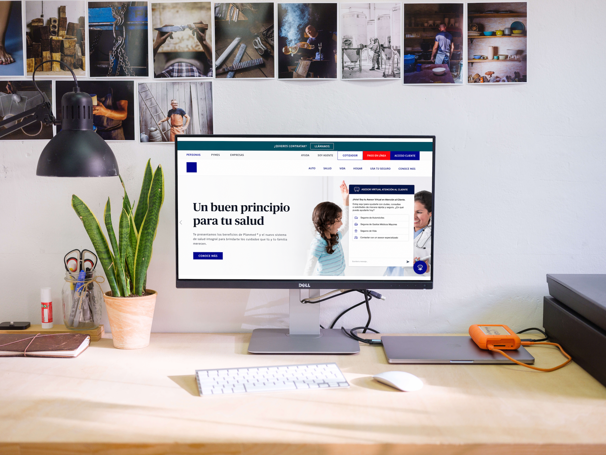
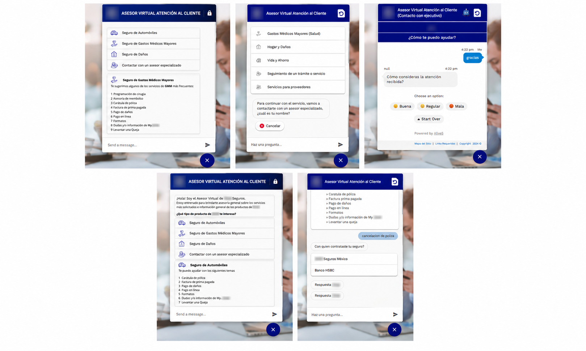

Caso de estudio
Estrategia de Atención Híbrida
Diseño de un sistema conversacional para habilitar el autoservicio mediante chatbot y chat en vivo

Descripción breve
Diseño de una estrategia de atención híbrida para una aseguradora francesa multiramo, orientada a disminuir la carga operativa del Contact Center mediante la incorporación de un chatbot integrado con el servicio de chat en vivo existente. El proyecto transformó un modelo de atención centrado en canales humanos hacia un sistema conversacional escalable, capaz de resolver consultas frecuentes mediante autoservicio y transferir de forma contextualizada aquellos casos que requerían intervención de un asesor.
Desafío
Los canales digitales de atención habían evolucionado de forma independiente durante más de una década, sin una estrategia omnicanal ni lineamientos comunes de experiencia. Como consecuencia, los asegurados encontraban inconsistencias entre canales, poca confianza en las herramientas digitales y frecuentes interrupciones en sus recorridos, lo que incrementaba la dependencia del Contact Center incluso para consultas que podían resolverse mediante autoservicio.
La iniciativa inicial consistía en implementar un chatbot para reducir la carga operativa del Contact Center. Sin embargo, el reto de diseño consistió en definir una estrategia de atención híbrida que integrara automatización y atención humana como un único servicio, estableciendo criterios claros para resolver consultas mediante el chatbot o transferirlas oportunamente al chat en vivo, considerando además las restricciones de seguridad que impedían el uso de datos personales dentro del canal automatizado.
Proceso
Discovery
Como Product Designer, inicié el proyecto analizando las principales causas de contacto del Contact Center mediante la revisión de los temas con mayor volumen de consultas. Entre ellos se encontraban la descarga de pólizas, consulta de coberturas, obtención de documentos para iniciar trámites y seguimiento de solicitudes.
Posteriormente documenté cómo los asesores resolvían cada uno de estos casos para comprender la lógica operativa detrás de las conversaciones y transformarla en flujos conversacionales.
Como complemento, realizamos una recopilación de expresiones utilizadas por los asegurados en distintas regiones del país para identificar variaciones del lenguaje natural que pudieran afectar el reconocimiento de intenciones. Este ejercicio permitió ampliar considerablemente las formas en que una misma solicitud podía interpretarse dentro del chatbot.
Definición
Sinteticé los hallazgos para construir la arquitectura conversacional del servicio, definiendo alrededor de 100 intents organizados a partir de los principales motivos de contacto del usuario.
Transformé el conocimiento operativo del Contact Center en árboles de decisión adaptados al canal conversacional, estableciendo las respuestas, rutas de navegación y criterios de escalamiento hacia un asesor cuando la consulta excedía las capacidades del chatbot.
Uno de los principales retos fue determinar el momento adecuado para transferir la conversación al chat en vivo. Para evitar que el usuario quedara atrapado en ciclos de conversación, diseñé estrategias de recuperación cuando el chatbot no lograba identificar correctamente la intención del usuario, ofreciendo la transferencia automática después de múltiples intentos fallidos.
Asimismo, definimos un modelo de medición para evaluar el desempeño del servicio mediante indicadores como reconocimiento de intents, abandono de conversaciones, frecuencia de temas consultados, funnels conversacionales y encuesta de satisfacción del chatbot.
Diseño
Diseñé la experiencia conversacional utilizando los componentes disponibles en Dialogflow, complementados con elementos visuales alineados al sistema de diseño corporativo.
La solución combinó distintos patrones de interacción según el contexto de cada consulta: lenguaje natural mediante texto libre, navegación guiada mediante quick replies, tarjetas con información estructurada, y árboles de decisión para consultas complejas.
Además de diseñar los flujos principales, desarrollé los mensajes conversacionales del asistente virtual, manteniendo el tono institucional de la marca sin construir una personalidad propia para el chatbot.
También diseñé los estados de recuperación, mensajes de confirmación, continuidad entre canales, transferencia al asesor, espera durante la conexión y cierre de conversación, buscando que la transición hacia el chat en vivo fuera clara y continua para el usuario.
Tras la implementación participé activamente en la evolución del producto durante aproximadamente un año y medio, gestionando nuevos requerimientos del Contact Center, actualizaciones de contenido y validando junto con el proveedor la correcta implementación de cada mejora antes de su liberación.
Resultado
Para el usuario
Para el usuario Los asegurados obtuvieron un nuevo canal de autoservicio para resolver consultas frecuentes mediante lenguaje natural y navegación guiada, con una transición fluida hacia un asesor cuando la automatización no era suficiente.
La incorporación de mensajes de recuperación y continuidad permitió reducir la sensación de bloqueo cuando el chatbot no comprendía una solicitud, mientras que la transferencia contextualizada evitó que el usuario tuviera que reiniciar completamente su conversación.
Para el negocio
Para el negocio La estrategia permitió reducir aproximadamente un 10% la demanda de atención en el chat en vivo mediante la automatización de consultas recurrentes.
También mejoró el enrutamiento de solicitudes, diferenciando de forma más precisa los casos correspondientes a clientes, agentes, proveedores y soporte técnico, canalizando cada conversación hacia el equipo adecuado y reduciendo la carga operativa derivada de solicitudes mal clasificadas.
Adicionalmente, el proyecto estableció por primera vez un modelo de métricas para monitorear el desempeño del chatbot y evidenció las limitaciones de operar chatbot y chat en vivo sobre plataformas independientes, fortaleciendo el caso de negocio para evolucionar hacia una estrategia omnicanal.
Aprendizaje clave
Aprendizaje clave Un chatbot no resuelve problemas únicamente por automatizar respuestas; su valor depende de la estrategia conversacional que conecta las necesidades del usuario con la operación del negocio.
Este proyecto demostró que diseñar un sistema híbrido implica definir cuidadosamente cuándo automatizar, cuándo escalar a un asesor y cómo mantener la continuidad de la conversación entre ambos canales. También confirmó que las limitaciones tecnológicas y de seguridad pueden condicionar la experiencia, por lo que el diseño debe adaptarse a ellas sin perder claridad ni eficiencia para el usuario.
Habilidades
Galería
